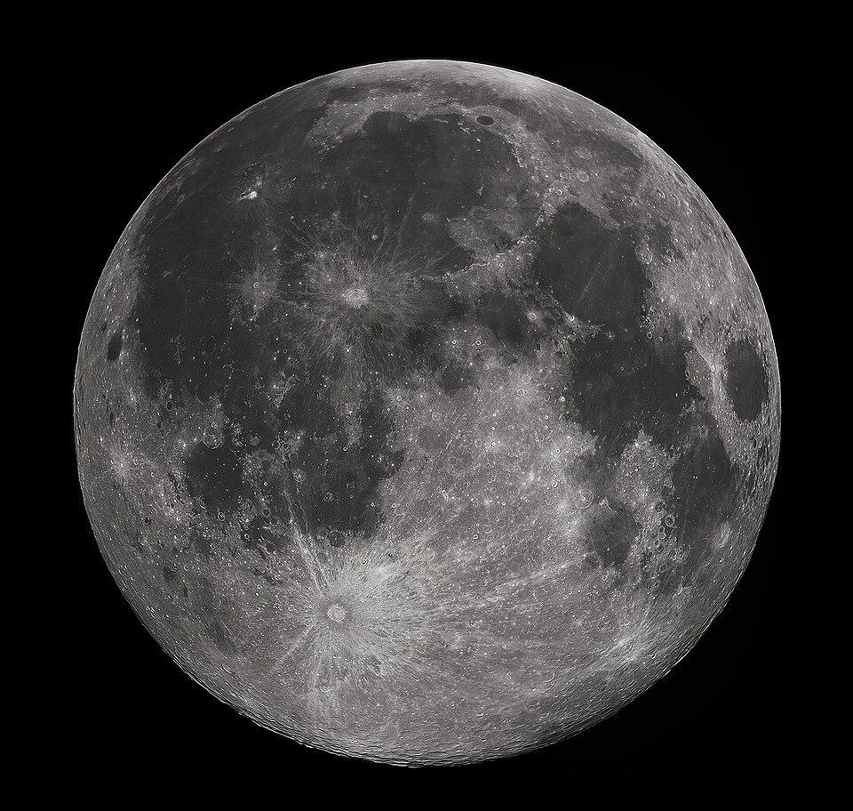

A Lua Cheia ocorre aproximadamente a cada 29,5 dias, cerca de 15 dias após a Lua Nova, quando o satélite está alinhado entre o Sol e a Terra, com a Lua no lado oposto em relação à Terra, resultando na sua total iluminação visível do nosso planeta. A próxima Lua Cheia será no dia 7 de setembro de 2025.
As datas exatas das Luas Cheias para 2025 são: 13 de janeiro, 12 de fevereiro, 14 de março, 12 de abril, 12 de maio, 11 de junho, 10 de julho, 9 de agosto, 7 de setembro, 7 de outubro, 5 de novembro e 4 de dezembro.
A Lua Cheia ocorre quando o Sol, a Terra e a Lua se alinham na mesma linha reta, com a Terra no centro, e o lado iluminado da Lua está totalmente visível da Terra.
Este é um momento de alta intensidade luminosa, com a Lua a ser o satélite mais brilhante e grande visível no céu.
